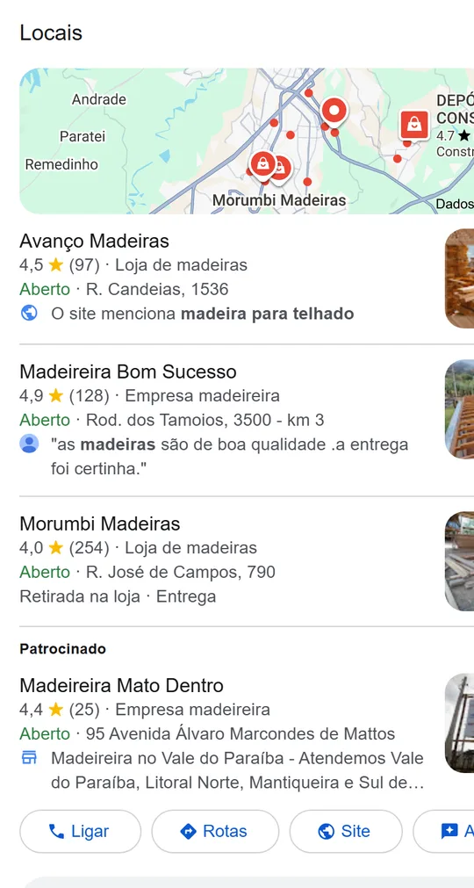
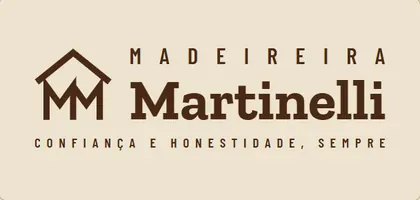
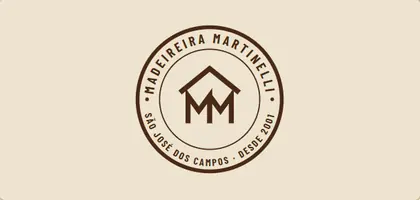
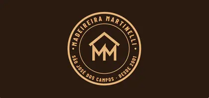
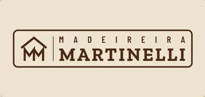

Madeireira Martinelli
Quanto custa não ser achado pelo cliente certo?
Quem busca “madeira para telhado são josé dos campos” no Google encontra a Avanço, a Bom Sucesso e a Morumbi.
A Martinelli não aparece.
Primeira página do Google em São José dos Campos, 27/11/2026.
No celular do cliente
O que o cliente vê quando procura?
Quem aparece é a concorrência. O seu nome leva ao erro.
Em madeira para telhado, aparecem Avanço, Bom Sucesso e Morumbi. Pelo nome, o primeiro link leva à página fora do ar.

O que já funciona
O que diz quem já comprou aí?
Quem compra na Martinelli elogia. O que falta é o cliente achar a madeireira.
Preço que ganha a cotação, vendedoras citadas pelo nome e entrega no prazo, nas palavras de quem comprou.

Como está hoje
O que o cliente encontra quando procura a Martinelli?
Quatro canais, só um trabalhando a favor da madeireira.
- Site Para resolver já
Fora do ar
O endereço é seu e está pago até 2028, mas abre uma página de erro do Wix.
madeireiramartinelli.com. br - Google
Nota 4,5 com 46 avaliações
Aparece no mapa, com a nota que os clientes deram.
- Instagram
Parado desde outubro de 2025
843 seguidores; de 2 a 8 curtidas por post.
- Facebook
Espelho do Instagram
Parado junto, e o link ainda leva ao site fora do ar.
Onde o cliente te acha
Quem o cliente encontra quando procura o que a Martinelli vende?
Ganha em pergolado. Some em telhado, deck e telhas.
O site antigo dizia “especialistas em telhado”. Hoje, quem procura telhado encontra a vizinha.
- pergolado de madeiraFacebook e Instagram também na primeira página1ª no mapa
- madeireirasem site; 5ª no Maps entre 55 lojas3ª no mapa
- madeira para telhadoaparecem Avanço, Bom Sucesso e MorumbiNão aparece
- deck de madeiraaparecem MadeiraDeck, Avanço e Mundo dos DormentesNão aparece
- telhasaparecem lojas de telha e calhaNão aparece
Buscas com “são josé dos campos”, primeira página do Google em 25/11/2026.
Nova identidade visual
O cliente reconhece a madeireira só de olhar o perfil?
A mesma marca, agora modernizada e com cara de madeireira.
Três caminhos já desenhados a partir do logo de hoje.
Caminho A MM sob o telhado

Caminho B Selo marcado a fogo


Caminho C A placa

Site novo
E quando o cliente clicar em “Site”?
O endereço de sempre volta, feito para o celular.
O site novo no computador e no celular: botão do WhatsApp sempre à vista e uma página para cada produto.

PageSpeed do Google
Quanto tempo o cliente espera antes de ir para o próximo?
A cidade fica entre 37 e 94. O site novo tira 100.
Os concorrentes, medidos no mesmo dia
- ✕Martinelli hojefora do ar
- 37Avanço Madeiras
- 52Alemão Madeiras
- 60Madeireira Pantanal
- 94Morumbi Madeiras
Site novo proposta
- 100Desempenho
- 100Acessibilidade
- 100Boas práticas
- 66*SEO
1,5 s para mostrar o conteúdo principal no celular
No computador: 100 · 100 · 100 · 66* · ver relatório
Notas do celular, de 0 a 100 (Google, 25/11/2026).
*SEO em 66 porque a proposta está fechada para o Google.
Instagram e Facebook
Por que o cliente lembraria da Martinelli na hora de comprar?
Toda semana, um motivo para o cliente lembrar da Martinelli.
Obra entregue, checklist da compra, infográfico e vídeo curto.
Amostra para a Martinelli
Uma amostra do que a Martinelli vai receber.
- Site
A primeira tela do site novo
Com nota 100 no PageSpeed do Google.
- Marca
3 caminhos de logo
Cada um em fundo claro, escuro e na madeira.
- Redes
1 post, 1 carrossel e 1 Reel animado
Com a cara nova da madeireira.
- Diagnóstico
46 avaliações, 7 buscas e 5 concorrentes
O diagnóstico inicial desta conversa.
Mas isso é só a ponta do iceberg.
O que fazemos
Primeiro, o plano. Depois, a execução.
- 01
Relatório estratégico
A estratégia da madeireira: diagnóstico completo, concorrência, metas para 3, 6 e 12 meses e o plano dos primeiros 90 dias.
- 02
Site, fotos e perfis
Site de volta com uma página por produto, sessão de fotos profissional, Google, Instagram e Facebook repaginados e CRM com a origem de cada orçamento.
- 03
Redes e Google
8 publicações no 1º mês, 12 no 2º e 16 por mês a partir do 3º, 1 vídeo curto por semana e 4 publicações por mês no perfil do Google.
- 04
Campanhas
No Instagram, no Facebook e no Google Ads, com criativos feitos pela Ativaleads e relatório semanal. A verba é paga pela madeireira direto à Meta e ao Google.
Antes de decidir
Pouco muda na rotina, e nada prende a madeireira.
- Indicação
“Meu cliente vem por indicação.”
Quem recebe a indicação e procura o nome encontra 3 links para a página fora do ar entre os 8 primeiros.
- Redes
“Já postamos e não deu nada.”
Foram 8 posts em 3 semanas e 13 meses parado. A gestão é toda semana, com relatório semanal.
- Tempo
“Não tenho tempo para isso.”
A Ativaleads faz. Da madeireira: os acessos e a aprovação do material.
- Risco
“E se não der certo?”
Sem fidelidade. O relatório semanal mostra o que andou, e a madeireira decide se continua.
Próximos passos
Implantação pronta em até 15 dias depois das fotos.
- Conversa para escolher o pacote e por onde começar.
- Relatório estratégico apresentado em reunião.
- Site de volta no endereço de sempre e os links do erro corrigidos.
- Google respondido em dia, CRM ligado e Instagram retomado.
Madeireira Martinelli
Faz sentido para a Martinelli?
Site no ar, Google em dia e redes com rotina, com relatório semanal. Agora, os valores: a implantação e os três pacotes mensais.